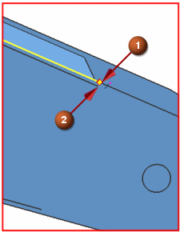
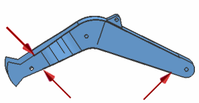

Split faces
The next step in removing sliver faces is to split the faces.
 Split Face (Polygon Geometry group)
Split Face (Polygon Geometry group)
-


-

Note
After you select the point, the split is complete. You do not need to click Accept or OK until you finish splitting faces.
-
Repeat these steps for the other three ends of the sliver faces.

-
OK